03 · 机器人运动学、动力学与控制
基础讲义 · 2026-10-12 · 本地公式与矢量图 · 点击图示放大
阅读目标：把末端几何目标变为关节轨迹与控制输入。区分路径、时间轨迹和实际闭环控制。
1. 符号与接口
| 符号 |
含义 |
维数 / 单位 |
| q,q˙,q¨ |
关节位置、速度、加速度 |
n；旋转 rad、移动 m 及其时间导数 |
| p,R,T |
末端位置、旋转、齐次位姿 |
3、3×3、4×4 |
| ξ=[v;ω],J |
线速度在前的几何 twist、雅可比 |
6、6×n；不与角速度在前约定混用 |
| M,C,g,τ |
惯性矩阵、速度耦合、重力、广义力 |
力矩关节 N·m，移动关节 N |
| x,u,A,B |
控制状态、输入、线性系统矩阵 |
状态/动作维度由模型指定 |
| Q,Rc,P,K |
状态代价、控制代价、价值矩阵、反馈增益 |
Rc≻0,Q⪰0；区别旋转 R |
| e,λ,η |
任务误差、IK 阻尼、迭代步长 |
位置和朝向需权重 / 缩放 |
2. 正运动学：变换连乘与二连杆例子
BTE(q)=i=1∏nTi−1,i(qi),Ti−1,i=Rotz(θi)Transz(di)Transx(ai)Rotx(αi).(3.1)LaTeX 源码
{}^BT_E(q)=\prod_{i=1}^nT_{i-1,i}(q_i),\quad T_{i-1,i}=\operatorname{Rot}_z(\theta_i)\operatorname{Trans}_z(d_i)\operatorname{Trans}_x(a_i)\operatorname{Rot}_x(\alpha_i).\tag{3.1}
这是标准 DH 次序；改进 DH 的轴定义和顺序不同。旋转关节的 theta 可变，移动关节的 d 可变。工具偏置还需在末端右乘固定变换。
推导 1 · 平面二连杆的位置与雅可比
连杆长 l1,l2，关节角 q1,q2。第一连杆方向 q1，第二连杆绝对方向 q1+q2：
pxpyJp=l1cosq1+l2cos(q1+q2),=l1sinq1+l2sin(q1+q2),=[−l1sinq1−l2sin(q1+q2)l1cosq1+l2cos(q1+q2)−l2sin(q1+q2)l2cos(q1+q2)].(3.2)LaTeX 源码
\begin{aligned}p_x&=l_1\cos q_1+l_2\cos(q_1+q_2),\\p_y&=l_1\sin q_1+l_2\sin(q_1+q_2),\\J_p&=\begin{bmatrix}-l_1\sin q_1-l_2\sin(q_1+q_2)&-l_2\sin(q_1+q_2)\\l_1\cos q_1+l_2\cos(q_1+q_2)&l_2\cos(q_1+q_2)\end{bmatrix}.
\end{aligned}\tag{3.2}
直接对每个关节角求偏导即得雅可比；detJp=l1l2sinq2，伸直或折叠时位置控制奇异。l1=l2=1 m，q=(0,π/2) 时 p=(1,1) m，Jp=[−1,−1;1,0]。
一般三维旋转关节第 i 列为 Ji=[zi×(pE−pi);zi]，移动关节为 [zi;0]；所有轴、点必须在同一参考系表达。
3. 逆运动学：局部线性化到阻尼最小二乘
目标位姿 T∗，当前位姿 T(q)。局部误差选 e=[p∗−p;Log(R∗R⊤)∨]，这里旋转误差和空间雅可比使用同一参考系。
推导 2 · 正则化 IK、奇异值解释和迭代流程
由 Taylor 展开，e≈JΔq。求正则化最小二乘：
Δqmin ∥JΔq−e∥2+λ2∥Δq∥2.(3.3)LaTeX 源码
\min_{\Delta q}\ \|J\Delta q-e\|^2+\lambda^2\|\Delta q\|^2.\tag{3.3}
(J⊤J+λ2I)ΔqΔqqk+1=J⊤e,=J⊤(JJ⊤+λ2I)−1e,=qk+ηΔq.(3.4)LaTeX 源码
\begin{aligned}(J^\top J+\lambda^2I)\Delta q&=J^\top e,\\\Delta q&=J^\top(JJ^\top+\lambda^2I)^{-1}e,\\q_{k+1}&=q_k+\eta\Delta q.\end{aligned}\tag{3.4}
用 J=Udiag(σi)V⊤，阻尼逆的增益是 σi/(σi2+λ2)，而伪逆是 1/σi。因此小奇异值不会无限放大关节步长；代价是残差不能完全消除。
位置米和朝向弧度需任务权重 W，目标改为 ∥W1/2(JΔq−e)∥2。大旋转时应使用与 Log 误差一致的雅可比修正，而非把几何雅可比无条件当成精确导数。

图 03.1 · 箭头表示信息 / 计算流程；具体输入、变量与假设见本节说明。查看 Mermaid 图源码
flowchart TD
S[目标位姿 / 初始关节 q] --> F[正运动学 / 误差 e]
F --> C{误差低于阈值?}
C -->|是| V[限位 / 自碰撞 / 环境碰撞检查]
C -->|否| J[雅可比 / 阻尼求解]
J --> L[步长选择 / 更新 q]
L --> M{迭代预算耗尽?}
M -->|否| F
M -->|是| R[失败 / 换初值或目标]
V --> O[可行 IK 候选] 4. 动力学：Euler–Lagrange 方程
推导 3 · 能量到惯性、重力和单摆例子
动能 T=21q˙⊤M(q)q˙，势能 V(q)，L=T−V。
dtd∂q˙i∂L−∂qi∂L=τi,M(q)q¨+C(q,q˙)q˙+g(q)=τ+J⊤Fext.(3.5)LaTeX 源码
\frac d{dt}\frac{\partial\mathscr L}{\partial\dot q_i}-\frac{\partial\mathscr L}{\partial q_i}=\tau_i,\qquad M(q)\ddot q+C(q,\dot q)\dot q+g(q)=\tau+J^\top F_{ext}.\tag{3.5}
其中 gi=∂V/∂qi，一种标准 C 定义为：
Cij=k∑21(∂qk∂Mij+∂qj∂Mik−∂qi∂Mjk)q˙k.(3.6)LaTeX 源码
C_{ij}=\sum_k\frac12\left(\frac{\partial M_{ij}}{\partial q_k}+\frac{\partial M_{ik}}{\partial q_j}-\frac{\partial M_{jk}}{\partial q_i}\right)\dot q_k.\tag{3.6}
单摆：质点 m、杆长 l、q 从竖直向下测量，T=ml2q˙2/2，V=mgl(1−cosq)，所以 ml2q¨+mglsinq=τ。如有粘性摩擦还加 bq˙。
外力通过虚功：δW=F⊤δx=F⊤Jδq，故关节广义力为 J⊤F；wrench 的力 / 力矩排列须与 twist 对偶。真实系统还包含驱动器时延、齿隙与接触。
5. PID、LQR 与 MPC
PID 的输入可为驱动器的速度或力矩指令，依接口决定：
u(t)=Kpe(t)+Ki∫0te(s)ds+Kde˙(t).(3.7)LaTeX 源码
u(t)=K_pe(t)+K_i\int_0^t e(s)ds+K_d\dot e(t).\tag{3.7}
积分项抗稳态扰动但需抗饱和；微分项会放大测量噪声，通常滤波并对测量微分。反馈频率和通信延迟决定稳定裕度。
推导 4 · Bellman 二次价值到离散 Riccati 方程
线性系统 xk+1=Axk+Buk；无限时域代价 ∑k≥0(xk⊤Qxk+uk⊤Rcuk)，假定稳定化 / 可检测条件。设 V(x)=x⊤Px：
V(x)=umin[x⊤Qx+u⊤Rcu+(Ax+Bu)⊤P(Ax+Bu)].(3.8)LaTeX 源码
V(x)=\min_u\left[x^\top Qx+u^\top R_cu+(Ax+Bu)^\top P(Ax+Bu)\right].\tag{3.8}
对 u 求导得 (Rc+B⊤PB)u=−B⊤PAx。因此：
K=(Rc+B⊤PB)−1B⊤PA,u=−Kx,P=Q+A⊤PA−A⊤PB(Rc+B⊤PB)−1B⊤PA.(3.9)LaTeX 源码
K=(R_c+B^\top PB)^{-1}B^\top PA,\quad u=-Kx,\quad P=Q+A^\top PA-A^\top PB(R_c+B^\top PB)^{-1}B^\top PA.\tag{3.9}
MPC 则在每个时刻解有限时域优化：
u0:H−1min s.t. k=0∑H−1ℓ(xk,uk)+Vf(xH)xk+1=f(xk,uk),xk∈X, uk∈U.(3.10)LaTeX 源码
\begin{aligned}\min_{u_{0:H-1}}\ &\sum_{k=0}^{H-1}\ell(x_k,u_k)+V_f(x_H)\\\text{s.t. }&x_{k+1}=f(x_k,u_k),\quad x_k\in\mathcal X,\ u_k\in\mathcal U.\end{aligned}\tag{3.10}
仅执行第一个控制量，再估状态并重解。约束可以表达关节、碰撞、力矩限制；实时优化失败要有明确降级接口。
6. 路径、轨迹与规划算法
路径 q(s) 描述几何；轨迹 q(s(t)) 加时间。链式法则约束速度与加速度：
q˙=q′(s)s˙,q¨=q′′(s)s˙2+q′(s)s¨.(3.11)LaTeX 源码
\dot q=q'(s)\dot s,\qquad\ddot q=q''(s)\dot s^2+q'(s)\ddot s.\tag{3.11}
| 算法 |
关键步骤 |
保证的条件 / 限制 |
| A* |
弹出最小 g+h，扩展邻居、更新父节点 |
一致启发式或正确重开节点；有限图等标准条件 |
| RRT |
采样、最近邻、向样本扩展、碰撞检查 |
概率完备须满足假设；不保证最优 |
| RRT* |
RRT 后选择低成本父节点并重连邻域 |
适当邻域和采样条件下渐近最优 |
| 轨迹优化 |
以初轨迹最小化平滑 / 碰撞 / 动力学代价 |
局部极值；需可行性复核 |

图 03.2 · 箭头表示信息 / 计算流程；具体输入、变量与假设见本节说明。查看 Mermaid 图源码
flowchart LR
G[目标 / 地图] --> I[IK 候选]
I --> P[配置空间路径]
P --> T[平滑 / 时间参数化]
T --> C[反馈控制 / 安全层]
C --> E[机器人环境]
E --> S[传感与估计]
S --> C
S --> P
抓取应用：标定 → 世界系点云 → 抓取候选 → IK / 碰撞过滤 → 接近轨迹 → 闭环修正 → 接触 / 提起验证。工具和夹具也参与碰撞检测，不能只检查末端点。
来源：Modern Robotics 教材与配套材料、RRT / 规划教材。本章为教学推导，不绑定具体机器人接口。